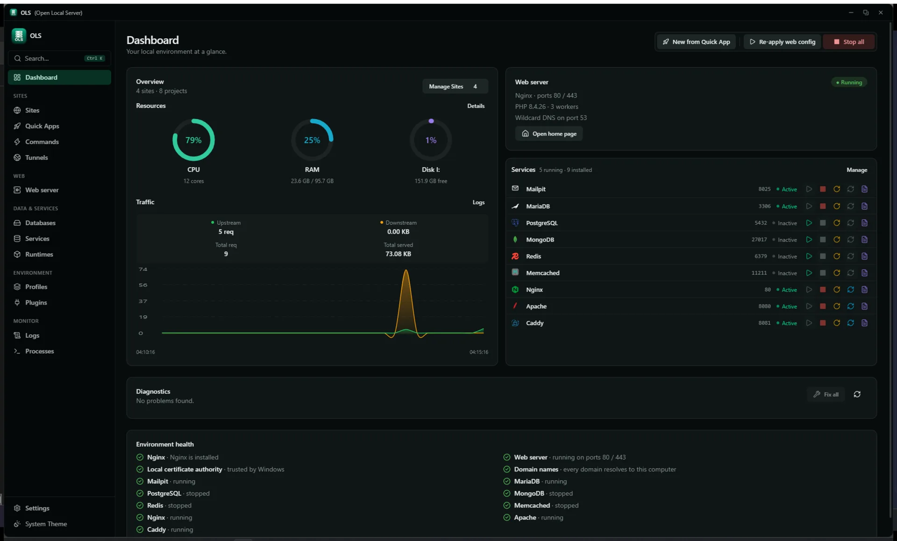
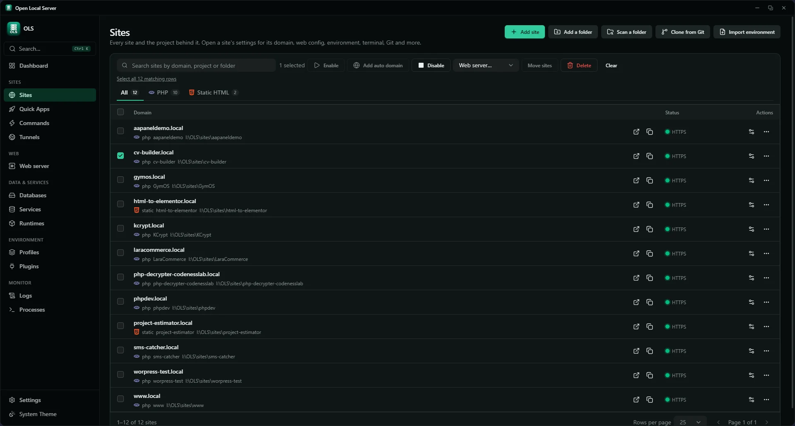
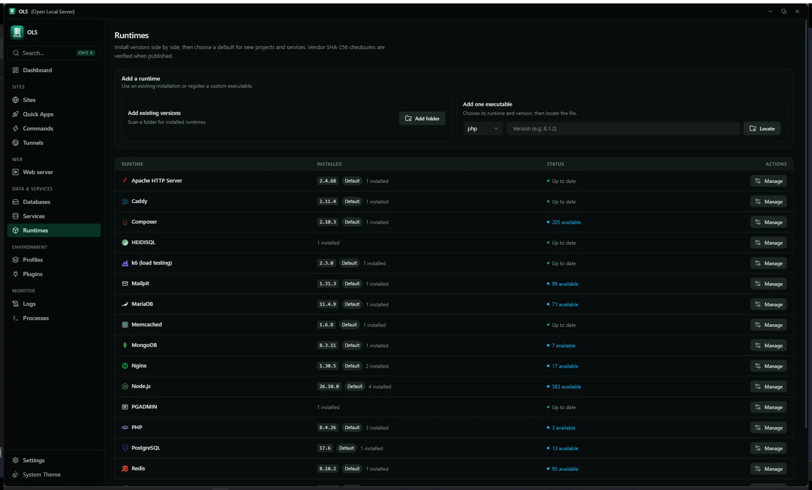
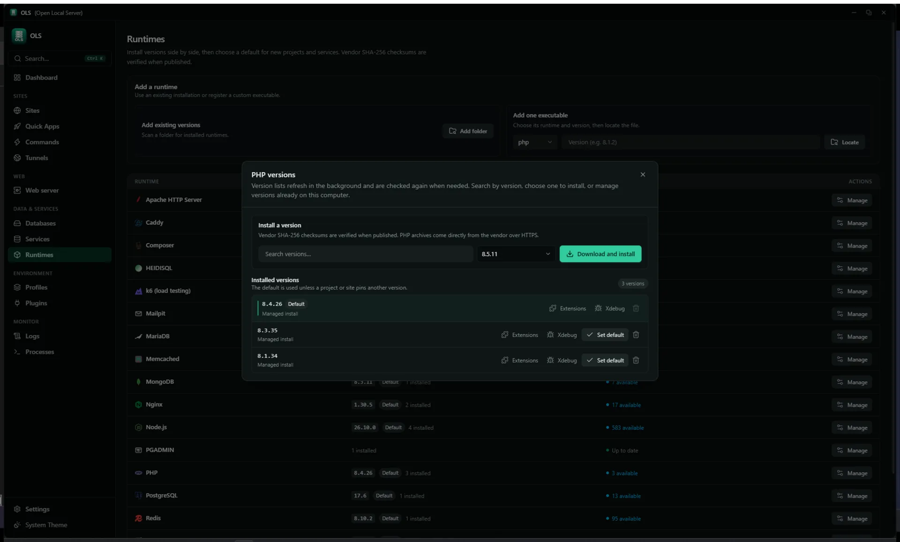
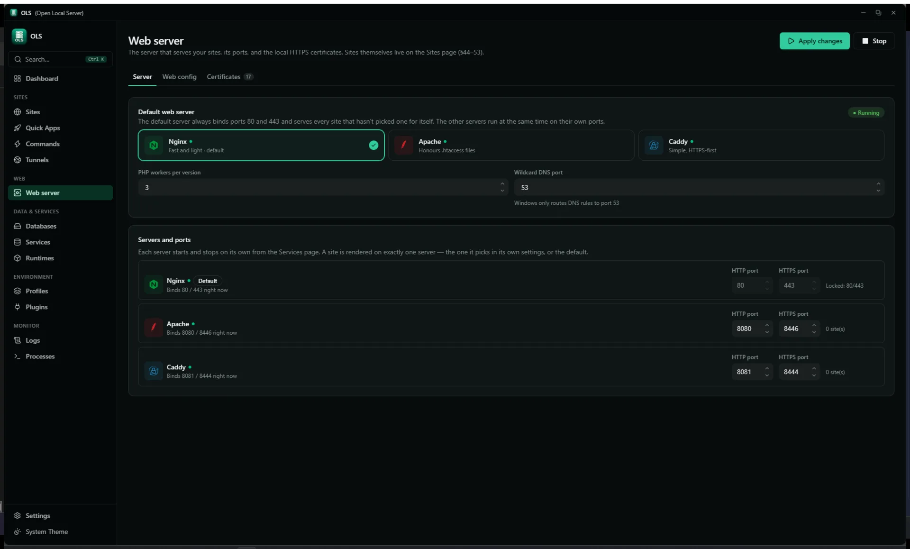
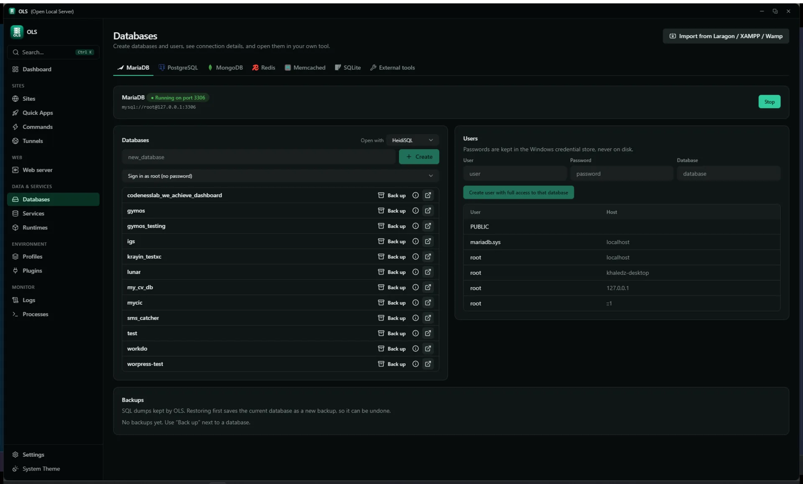
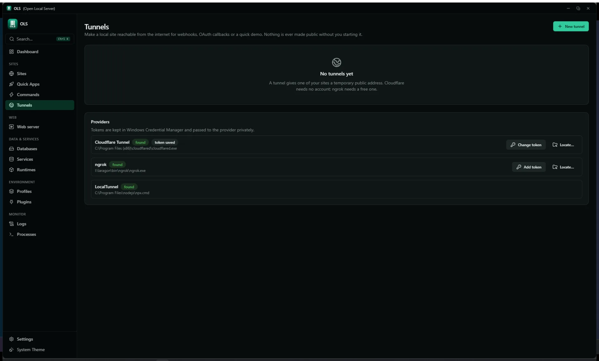

A local development environment manager for Windows. OLS installs
and supervises runtimes, gives every project its own
.test domain with trusted HTTPS, and keeps databases,
mail and caches behind one core engine.
Windows 10 / 11, 64-bit. One installer,
OLS-<version>-setup.exe, plus a portable zip.
v1.1.0
GPL-3.0-only
Rust core · Tauri 2 shell
GUI · CLI · HTTP API
OLS — Dashboard

What is this
One environment per project, without hand-editing your machine
XAMPP and Laragon give you a global stack: one PHP, one database, one
htdocs folder everybody shares. The next project needs a
different PHP version, so you change the global one and break the first
project.
OLS is the successor to that model. It keeps multiple
runtimes side by side, pins a version to the project that needs it,
generates the web server configuration, provisions the database, issues
a certificate your browser already trusts, and registers the domain so
it resolves without you touching the hosts file.
Every error it shows is a Diagnostic — what broke, why, and
how to fix it. It never overwrites configuration you edited by hand:
generated files are tracked, drift is detected, and history keeps a diff
and a restore for every change.
Desktop app
React 19 · Tauri 2
Command line
ols setup · doctor · status
Local HTTP API
127.0.0.1:7420 · bearer token
All three send the same CoreCommand JSON to
ols-core. The CLI drives the open app, or starts a
background daemon when the app is closed.
Key features
Everything a local environment needs, under one supervisor
No hand-edited paths, no manual certificate trust, no per-project
README telling you which commands to run in which order.
Runtimes & toolchain
Side-by-side versions per runtime, with a default for new projects
that a project can override.
Validate, review the plan, run — with command history
Discovered Composer and npm scripts, one click to run, output kept in a ring
Tunnels & traffic inspector
Share a local site on purpose, and see what comes back.
Cloudflare, ngrok, LocalTunnel and Tailscale behind one provider abstraction
Exposure confirmation, optional password, public badge, one-click stop
Forwarding proxy with a redacted request log, replay and a webhook tester
CLI, API & automation
The same engine, reachable the way your tools expect.
ols on PATH — works with the GUI closed, through a background daemon
Local HTTP API with a bearer token and read-only vs operate scopes
Queue workers, a cron scheduler with no overlapping runs, and portable-pty terminals
Git manager, k6 load testing, a signed self-updater and declarative plugins
Product tour
The app, as it runs
Screenshots captured from the running desktop app in its dark theme.
Nothing on this page is a mock-up.
Dashboard
DashboardSites and projects counted, resource rings, a traffic graph built from the access log, all nine services with their ports, and diagnostics. Unavailable services are shown flat grey rather than looking clickable.
Sites

SitesOne table for sites and projects. Each row opens its domain, web config, servers, terminal, .env, Git, workers, snapshots, repair and load testing. Select rows to enable, disable, re-point or delete in bulk.
Runtimes

RuntimesEvery runtime with its installed versions, a default badge and a manage action — plus the two ways to bring your own: scan a folder, or locate a single executable.
Runtimes — PHP versions

Version managerPer runtime: search the vendor catalog, download and install, then manage extensions, Xdebug and the default for each installed version. SHA-256 is checked when the vendor publishes it.
Web server

Web serverEngine choice, ports and ownership mode. The config is validated before the reload, rolled back if it fails, and compared against what is on disk so hand edits surface as drift instead of being overwritten.
Databases

DatabasesEngines, databases and users with the connection details to paste. Backup takes a safety copy first; SQLite runs .backup and an integrity check. Existing Laragon, XAMPP and WampServer databases import live, without a dump file.
Tunnels

TunnelsNothing is made public without starting it and confirming the exposure. Provider binaries are found on PATH or in a known location rather than installed for you; tokens stay in Windows Credential Manager.
Getting started
Install, or build it yourself
The installer is the shortest path. The source build is four commands
if you want to work on OLS.
Install the app
Run OLS-<version>-setup.exe from the releases page.
Windows 10 or 11, 64-bit.
Install a runtime
Open Runtimes and install a PHP version, plus Node or Python if
you use them. Checksums are verified on download.
Point a site at it
Open Sites, add a project folder and give it a domain.
.test names resolve without editing the hosts file.
Apply and trust
Apply the web config and trust the local certificate authority once,
so HTTPS sites stop warning.
Take a project from clone to running
PowerShell
# Clone any PHP / Node / Python projectgit clone https://github.com/example/my-laravel-app.git
cd my-laravel-app
# Runtimes, database, domain, DNS, SSL, mail, workersols setup
# Preview the plan without applying itols setup --dry-run# Health, then safe fixesols doctor
ols repair
Everyday commands
ols
ols status # services, sites, runtimesols start # start every enabled serviceols stop # stop everythingols project list # registered projectsols service list # MariaDB, Postgres, Redis, Mailpit…ols runtime list # installed PHP and Node versionsols tunnel start --provider cloudflared --port 443
ols worker run --queue default
ols snapshot create --name"before-upgrade"ols search "mailpit"
# Tauri + Vite + Rust core, with hot reload
.\scripts\dev.bat
# Quality gatescargo fmt --all
cargo clippy -p ols-core -p ols-helper --all-targets
cargo test -p ols-core -p ols-helper
cd ui; npm run lint; npm run build
cd ..
# NSIS / MSI bundlecargo tauri build
For developers
One core, three front doors
ols-core is a single CoreCommand dispatcher over
shared state. The GUI, the CLI and the HTTP API are three front doors onto
the same managers — there is no second implementation of anything.
The local API is off by default and listens on
127.0.0.1:7420. Every request needs a bearer token;
requests carrying an Origin header are refused. A
read-only scope covers queries, an operate scope covers changes.
Plugins are declarative: a plugin.yaml checked against a
schema, contributing runtimes, Quick App recipes, project detections
or health checks. A plugin stays off until you approve exactly the
permissions it lists, and remote catalogs are minisign-signed and
re-verified on every load.
ProblemPort 3306 is already used by mysqld.exe (PID 4120).
CauseA second MariaDB data folder is running from an older install.
Fixols repair stops the orphan and reassigns the port. Review the plan, then apply.
Open source
GPL-3.0-only, and the specs are in the repository
OLS keeps specs/ as its source of truth for architecture,
modules, data models and API. A pull request that changes behaviour
without updating the matching spec is rejected in review — so the
documentation cannot drift away from the code.
Reports and discussions go to the issue tracker. Security issues follow
the published policy rather than a public issue.